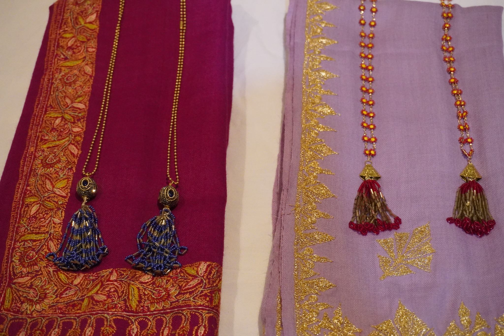

Aathor & Jewelry
Traditional handcrafted pieces inspired by a cherished Kashmiri cultural form.
Strength. Heritage. Empowerment.
HemAth preserves heritage and supports women artisans through handmade shawls, jewelry, tea, and mission-driven community work.
Our Story
HemAth supports displaced Kashmiri women by preserving traditional skills, promoting economic independence, and creating meaningful opportunities through craft and community.
What began as a mission rooted in resilience continues to grow into a digital and product experience that can connect more people to Kashmiri heritage.
Read our story →
Featured Collections
Explore products rooted in Kashmiri culture, craftsmanship, and community impact.

Traditional handcrafted pieces inspired by a cherished Kashmiri cultural form.

Elegant textiles shaped by traditional detail, careful embroidery, and timeless style.

Warm, aromatic tea blends that connect HemAth’s collection to Kashmiri culinary heritage.

Mission in Action
HemAth is building toward a simple e-commerce experience where people can browse and purchase products easily while directly supporting displaced Kashmiri women.
The goal is not just a store. It is a mission-led product space that combines culture, storytelling, and real economic opportunity.
Explore Shop